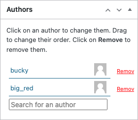

Coauthors
When you collaborate with others, you will need to add your coauthors to each entry you create that you worked on together.
Doing so will allow you to see one another's entries, even before they have been reviewed by your instructor or shared with the outside world.
To add coauthors, use the "Search for an author" field above the "Save" button when editing an entry. Begin typing a collaborator's display name, and a list of matches should appear from the other students in the courses you're enrolled in.

To quickly see which of your entries you are a solo author on or have collaborators listed, visit your "My Data" page, accessible from https://notebook.tinyearth.wisc.edu/.
We will talk more about the "My Data" table and its features later in this workshop, but it is good practice to review this table regularly to make sure your coauthors have been set properly – don't want to duplicate work that others in your team have already entered!
Now that you've entered an Environmental Sample and added coauthors, let's visit your "My Entries" page again to see how to add much more!